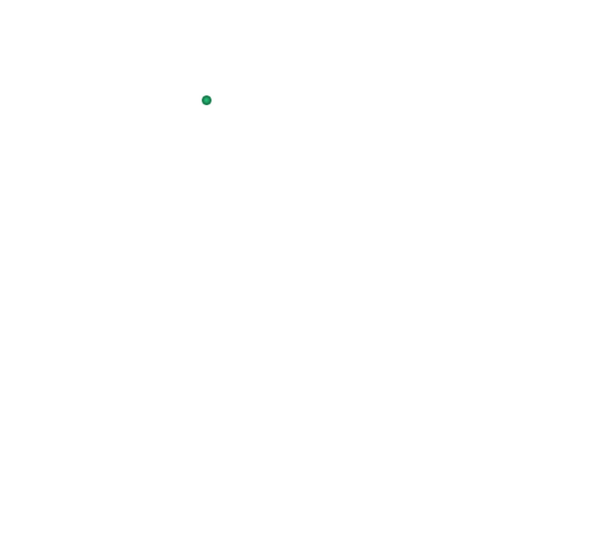
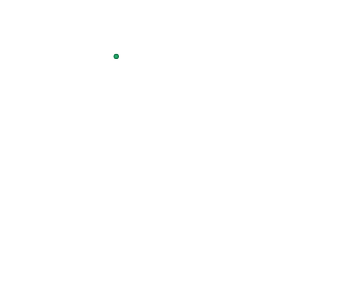

Каристос


 



Κάρυστος
Γενικές πληροφορίες:
- Χώρα: Ελλάδα
- Έκταση: 166.95 τ.χλμ.
- Πληθυσμός: 5 112 (2011)
- Περιφέρεια: Στερεάς Ελλάδας
Γραφική κωμόπολη και λιμάνι, με πλατείες και λειτουργικό ρυμοτομικό σχέδιο, το οποίο δημιουργήθηκε από πολεοδόμους του βασιλιά Όθωνα. Είναι γνωστή από την αρχαιότητα για τις περιώνυμες πλάκες Καρύστου, σχιστολιθικά πετρώματα της περιοχής. Aπέχει 124 χλμ. NA από τη Xαλκίδα.
Αξίζει να δείτε:Δραστηριότητες:
- Τα αρχαία λατομεία μαρμάρου στη θέση «Kύλινδροι», πάνω από τους Mύλους.
- Τον αναστηλωμένο βενετσιάνικο πύργο (Μπούρτζι) στην ανατολική παραλία της πόλης. Χτίστηκε τον 13ο αι.
- Τα απομεινάρια του ενετικού κάστρου (Kαστέλλο Pόσο, 13ου-15ου αι.) πάνω από μικρό δάσος.
- Το επιβλητικό δημαρχείο.
- Το Γιοκάλειο Πνευματικό Ίδρυμα στο οποίο στεγάζεται το Αρχαιολογικό Μουσείο με σημαντικά ευρήματα από την περιοχή.
- Τον μητροπολιτικό ναό του Αγίου Νικολάου.
- Το περίστυλο μαυσωλείο, που φιλοξένησε τη σορό Ρωμαίου αξιωματούχου.
- Το παλαιοημερολογίτικο μοναστήρι της Αγίας Μαύρας.
- Τη Μονή των Ταξιαρχών (9ου-12ου αι.) στα Καλύβια και του Αγίου Γεωργίου στο Μετόχι.
- Το όρος Όχη, στην κορυφή του οποίου θα βρείτε ένα από τα περίφημα δρακόσπιτα. Πρόκειται για μεγαλιθική κατασκευή, που χρονολογείται από τον 6ο έως τον 2ο αι. π.X.
- Τους ορεινούς οικισμούς της Όχης (Kαλύβια, Άγιος Δημήτριος, Πόθι, Γιαννίτσι).
- Τον Πλατανιστό (18 χλμ. ΝΑ), όπου σώζεται αναλημματικός τοίχος των ελληνιστικών χρόνων.
- Το καταπράσινο τοπίο της Αγίας Τριάδας.
- Την Παλαιοχώρα, όπου υπήρχε νεκροταφείο ελληνιστικής εποχής.
- Τα γραφικά χωριά του Κάβο Ντόρο Αμυγδαλιά, Δρυμονάρι, Πρινιά κ.ά.
- Το φαράγγι Δημοσάρη, που ξεκινά από τις πηγές του ομώνυμου ποταμού, κοντά στο χωριό Μύλοι, και μετά από απόσταση 10 χλμ. Καταλήγει στην παραλία Κολιανού.
Εκδηλώσεις:
- Κολύμπι στην παραλία της Καρύστου καθώς και στις παραλίες Λιβαδάκι, Παλαιοπιθάρα, Μνήματα, Αγία Παρασκευή, Ψιλή Άμμος, Κάβος, Μπούρος, Βαθύ Αυλάκι, Άγιοι, Καλάμι, Κιόνι, Πλατύς Γιαλός και Λιβάδι.
- Πολιτιστικές εκδηλώσεις, τους καλοκαιρινούς μήνες. Γιορτή Κρασιού, στα τέλη Αυγούστου με αρχές Σεπτεμβρίου.
Каристос
Основная информация:- Страна: Греция
- Площадь: 166.95 кв.км.
- Население: 5 112 (2011)
- Регион: Центральная Греция
Живописный город и порт, с площадями и функциональным планом дорог, созданный градостроителями короля Отто. Он был известен с древних времен благодаря знаменитым плитам Каристоса, сланцевым породам этого района. Это в 124 км к северо-востоку от Халкиды.
Стоит посмотреть:- Древние мраморные карьеры в местечке «Цилиндры», над Мельницами.
- Восстановленная венецианская башня (Бурдзи) на восточном пляже города. Он был построен в 13 веке.
- Руины венецианского замка (Кастелло Посо, 13-15 века) над небольшим лесом.
- Впечатляющая ратуша.
- Культурный фонд Джокалейо, в котором находится Археологический музей с важными находками из этого района.
- Митрополичья церковь Святого Николая.
- Мавзолей в перистиле, в котором хранились останки римского чиновника.
- Старый монастырь Айя Мавра.
- Монастырь Таксиархов (9-12 вв.) в Каливии и Агиос Георгиос в Метохи.
- Гора Охи, на вершине которой вы найдете один из знаменитых домов драконов. Это мегалитическое сооружение, датируемое 6–2 веками до нашей эры.
- Горные поселения Охи (Каливия, Агиос Димитриос, Поти, Яннитси).
- Платанистос (18 км к юго-востоку), где сохранилась подпорная стена эллинистических времен.
- Зеленый пейзаж Святой Троицы.
- Палеохора, где находилось кладбище эпохи эллинизма.
- Живописные деревни мыса Доро Амигдалия, Дримонари, Приния и др.
- Ущелье Димосари, которое начинается от истоков одноименной реки, недалеко от деревни Милой, и через 10 км заканчивается на пляже Колиану.
- Купание на пляже Каристос, а также на пляжах Ливадаки, Палеопитара, Мнимата, Агиа Параскеви, Псили Аммос, Кавос, Бурос, Вати Авлаки, Агиои, Калами, Киони, Платис Ялос и Ливади.
- Культурные мероприятия в летние месяцы. Фестиваль вина, с конца августа до начала сентября.